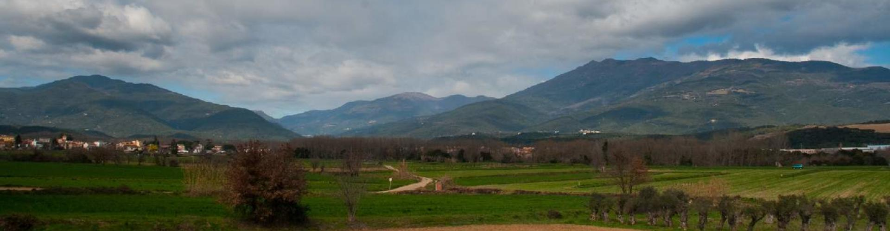

Ruta · Palautordera
Aquest itinerari a Santa Mª de Palautordera, una de les portes del Parc Natural del Montseny, ens acosta fins el Pont Trencat al terme de Sant Celoni. Copsarem la magnitud i el caràcter agrícola…